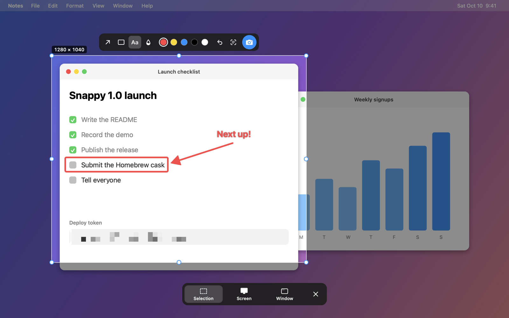

Screenshots in one shortcut.
Press ⌘⇧2, drag over what you want, click once. Snappy freezes the screen so you can move, resize and mark up your selection, then saves it and copies it to your clipboard.
$ brew install --cask beqaabu/tap/snappy-app

Try it here
Snappy launch
Everything a screenshot needs. Nothing it doesn't.
The screenshot flow from Ubuntu, brought to the Mac: one shortcut, one screen, one click.
Drag, then adjust
The screen freezes while you choose, so menus and tooltips stay put. Move the selection, resize it from any handle, and Snappy remembers it for next time.
Window or screen, one click
Hover a window to grab just that window, even if something covers it. Or take the whole screen. Keys work too: S W C.
Quick markup
Arrows, boxes, text and blur, right on the selection. Blur pixelates in the saved image, so passwords and tokens stay unreadable.
Copy the text, not the picture
Press ⌘C on a selection to copy the words in it: error messages, text in images and videos, apps that won't let you select. Recognized on your Mac, never uploaded.
Saved and copied
Every capture lands in your folder and on your clipboard. A preview waits in the corner: click to open it, or drag it into Slack, Mail or Finder. Shortcut, folder, format and all of this are yours to change in Settings.
Tiny and private
A menu bar app with no account, no analytics and no network access at all. Your screenshots never leave your Mac. MIT licensed.
Up and running in a minute.
No account, no setup wizard.
Install
Unzip and drag Snappy to Applications, then open it. Or with Homebrew: brew trust --tap beqaabu/tap brew install --cask beqaabu/tap/snappy-app
Allow Screen Recording
macOS asks once. Turn on Snappy in System Settings → Privacy & Security → Screen & System Audio Recording, then reopen it.
Press ⌘⇧2
Drag, adjust, click the camera. Or use the menu bar icon. Change the shortcut any time in Settings.
Questions
Why does it need Screen Recording access?
That's how macOS lets any app take a screenshot. Snappy only captures when you press the shortcut or use its menu, and it has no network access, so nothing is ever sent anywhere.
macOS says it can't verify the developer.
Snappy isn't notarized by Apple. Open System Settings → Privacy & Security, scroll down and click Open Anyway. You only need to do this once.
Why does Homebrew ask me to trust the tap?
Homebrew 6 and later only loads apps from third-party taps you've trusted. brew trust --tap beqaabu/tap does that once. The cask is called snappy-app because snappy is already Homebrew's name for Google's compression library.
Where do my screenshots go?
To ~/Pictures/Screenshots and your clipboard by default. Change the folder, the format, or turn either off in Settings.
How is this different from ⌘⇧4?
macOS captures as soon as you let go. Snappy lets you adjust the selection, mark it up and blur things before you capture, remembers the last area, and shows Selection, Screen and Window in one toolbar, like Ubuntu's screenshot tool.
Which versions of macOS are supported?
macOS 14 Sonoma and later, on Apple Silicon and Intel Macs.
Is it really free?
Yes. It's open source under the MIT license. The code is on GitHub, and issues and pull requests are welcome.